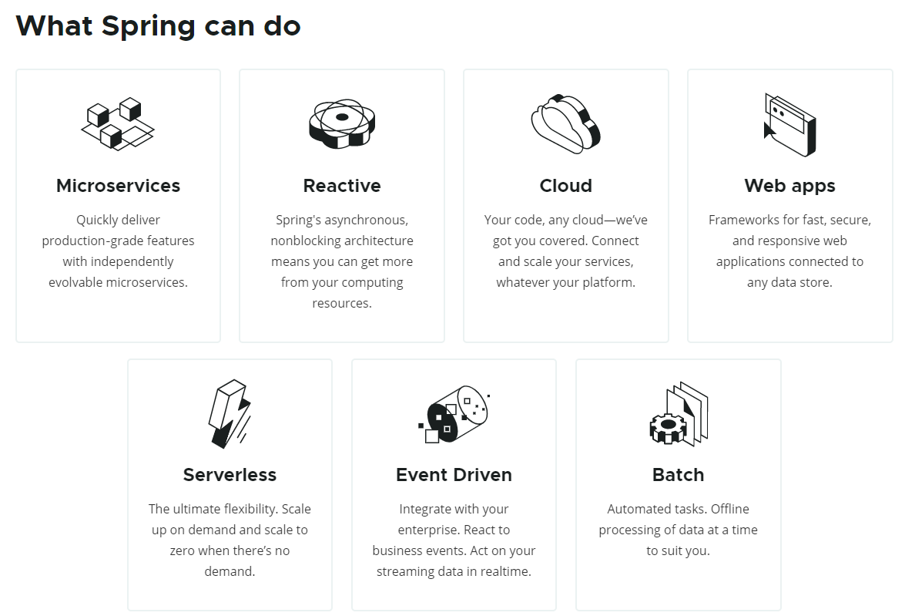
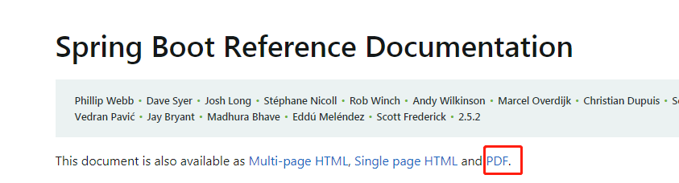

Spring和SpringBoot
1. Spring
1.1 Spring介绍
也可以称为SpringFramework

Microservices：微服务开发
每个应用随着时间推移都可能会成长为一个大型应用，如果将所有的模块代码全部写在一个项目里边，是不合适的，我们应该把这些模块拆分成一个一个微小的功能模块，每一个微小的功能模块称为是微服务。
Reactive：响应式编程
响应式编程基于异步非阻塞的方式，我们可以通过在每个应用之间构建一个异步数据流的方式，数据流允许占用少量服务器的线程、CPU资源就可以构建一个高吞吐量，高并发的应用。
Cloud：Spring可以用来做分布式云开发
Web app：做web开发
Serverless：无服务开发（FaaS，Function as a Service，”功能即服务”）
Event Driven：事件驱动
Spring可以将整个的分布式系统，构建出一个实时的streaming data（数据流），有了这个实时数据流以后就可以通过响应式的方式，让系统占用少量的资源就能完成高吞吐量的业务。
Batch：批处理业务
1.2 Spring5重大升级
1.2.1 响应式编程
其中包含了两套的技术栈
- Reactive Stack 响应式编程栈
- Servlet Stack
1.2.2 适配器 Template
如：
一个接口，有方法：1、2、3、4、5，
此时A类仅用到了方法1、2，但是如果A类直接继承该接口时，即使不用方法3、4、5，这三个方法也是必须实现的
Spring底层会大量使用适配器模式（Template），在Template中，其将接口中的所有的方法先全部进行默认实现，实现成一个空方法，此时A类仅用方法1、2时，只需要实现方法1、2。
而JAVA8中有了接口的默认实现后，适配器就没用了，因此适应JAVA8新特性
2. SpringBoot
SpringBoot是整合Spring技术栈的一站式框架
SpringBoot是简化Spring技术栈的快速开发脚手架
Spring拥有一套非常庞大的生态体系，但是使用Spring整合其他框架时却写需要非常多且复杂的配置文件，为了简化配置问题，出现了SpringBoot。
SpringBoot是一个高层框架，其底层是Spring框架。
Spring Boot makes it easy to create stand-alone, production-grade Spring based Applications that you can “just run”.
能快速创建出生产级别的Spring应用
2.1 SpringBoot优点
Create stand alone Spring applications
- 创建独立Spring应用
Embed Tomcat, Jetty or Under tow directly (no need to deploy WAR files)
- 内嵌web服务器
Provide opinionated ‘starter’ dependencies to simplify your build configuration
使用Spring开发时，由于场景需要可能需要导入各种各样的jar包，而且多个jar包之间可能会有版本冲突，使用SpringBoot后仅需添加该场景需要的starter，就会将所需的jar包都导入进来，并控制好版本。
- 自动starter依赖， 简化构建配置
Automatically configure Spring and 3rd party libraries whenever possible
- 自动配置Spring以及第三方功能
Provide production ready features such as metrics, health checks, and extemalized configuration
- 提供生产级别的监控、健康检查及外部化配置
Absolutely no code generation and no requirement for XML configuration
- 无代码生成、无需编写XML
2.2 SpringBoot缺点
- 版本迭代快，需要时刻关注变化
- 封装太深，内部原理复杂，不容易精通
时代背景
1. 微服务
介绍：https://martinfowler.com/articles/microservices.html
中文介绍：http://blog.cuicc.com/blog/2015/07/22/microservices/
微服务是一种架构风格
一个应用拆分为一组小型服务
每个服务运行在自己的进程内，也就是可独立部署和升级
服务之间使用轻量级HTTP交互
服务围绕业务功能拆分
可以由全自动部署机制独立部署
去中心化，服务自治。服务可以使用不同的语言、不同的存储技术
2. 分布式
2.1 分布式的困难
远程调用（使用http进行交互）
服务发现（查询可用的服务器）
负载均衡
服务容错（单体服务出错基本为代码问题，出错可以抛出异常；分布式出错可能是代码问题，也可能是网络问题，因此应对不同的错误需要有不同的错误处理）
配置管理（添加配置中心(Zookeeper)，将配置文件放在配置中心中，一处修改多处生效）
服务监控（多个服务以及云平台的资源消耗和健康状况）
链路追踪（一个复杂的业务流程可能需要连续调用多个微服务，我们需要记录一个完整业务逻辑涉及的每一个微服务的运行状态，再通过可视化链路图展现，帮助软件工程师在系统出错时分析解决问题，常见的解决方案有Zipkin，SkyWalking。）
日志管理（微服务架构默认将应用日志分散保存在每一个微服务节点上，当系统进行用户行为分析、数据统计时必须收集所有节点日志数据，非常不方便。这时候我们需要一个独立的日志平台，收集所有节点的日志数据并可方便对其进行汇总分析，常见的解决方案有ELK，EFK。）
任务调度
2.2 分布式解决方案
想要构建出一个分布式应用：
可以使用SpringBoot快速的构建出一个应用，
在这个应用中微服务模块众多，接下来使用SpringCloud将他们网状的互联互调起来，
然后这些网状之间的数据流可以使用SpringCloud Data Flow做成响应式数据流
2.3 云原生（服务部署问题）
上云困难
服务自愈（其中某个服务挂掉之后，是否会在其他地方重新拉起一个该服务）
弹性伸缩（流量高峰时自动扩充，非高峰时又自动下线）
服务隔离（在同一台服务器上部署的多个服务之间不会相互干扰）
自动化部署
灰度发布（服务更新时，先把服务部署在其中一两台上看运行效果，没有问题了再慢慢全部升级）
流量治理
上云解决

官方文档
官方PDF下载


SpringBoot文档

项目发布日志
使用入门HelloWorld
1. 系统要求
- java8 & 兼容java14
- Maven 3.3 +
- idea 2019.1.2 +
2. 创建SpringBoot项目
2.1 pom.xml
1 | <!-- 引入springboot --> |
2.2 添加启动类
1 | // @SpringBootApplication：声明这是一个SpringBoot应用 |
2.3 整合配置文件
resources/application.yml
官方配置文档


自动装配原理
1. SpringBoot特点
1.1 依赖管理
父项目做依赖管理
1
2
3
4
5
6
7
8
9
10
11
12
13
14
15
16
17
18
19
20
21
22<!-- 依赖管理 -->
<parent>
<groupId>org.springframework.boot</groupId>
<artifactId>spring-boot-starter-parent</artifactId>
<version>2.5.2</version>
<relativePath/> <!-- lookup parent from repository -->
</parent>
<!-- 父项目 -->
<parent>
<groupId>org.springframework.boot</groupId>
<artifactId>spring-boot-dependencies</artifactId>
<version>2.5.2</version>
</parent>
<!-- 父项目的父项目 -->
<!-- 在这之中声明了开发中几乎所有用到的jar包的版本号 -->
<!-- 自动版本仲裁机制 -->
<properties>
<activemq.version>5.16.2</activemq.version>
......
</properties>开发导入starter场景启动器
1
2
3
4
5
6
7
8
9
10
11
121. spring-boot-starter-* ： * 就代表某种场景
2. 只要引入starter，这个场景所有的常用的依赖都会引入
3. SpringBoot支持的所有starter：
https://docs.spring.io/spring-boot/docs/current/reference/html/using.html#using.build-systems.starters
4. *-spring-boot-starter 一般都是第三方提供
5. 所有场景启动器最底层的依赖（随便点进一个场景中即可看到）
<dependency>
<groupId>org.springframework.boot</groupId>
<artifactId>spring-boot-starter</artifactId>
<version>2.5.2</version>
<scope>compile</scope>
</dependency>无需依赖版本号，自动版本仲裁
1
只要 spring-boot-dependencies 中声明的依赖，引入时都不用写版本号
注. 若对自动版本仲裁机制中提供的版本不满意时
如：需要调整logback的版本

此时可以在pom文件中添加properties标签，里边标签对应 自动版本仲裁机制 中的标签，版本号为自身想要的版本号

1.2 自动装配
自动配置Tomcat
- 引入tomcat依赖 spring-boot-starter-web 中就有引用tomcat场景
- 配置tomcat
自动配置好SpringMVC 也是在 spring-boot-starter-web 中引入
- 引入SpringMVC全套组件
- 自动配好SpringMVC常用组件（功能）
自动配置好Web常见功能，如：字符编码问题
- SpringBoot帮我们配置好了所有web开发的常见场景
默认的包结构
- 主程序（启动类）所在包及其下面的所有子包里面的组件都会被默认扫描进来
- 无需添加包扫描的配置
- 若非要将组件放置在主程序（启动类）父级或更高级上，需要配置默认扫描包的位置
@SpringBootApplication(scanBasePackages="com")或@ComponentScan
1
2
3
4
5
6
7
相当于各种配置拥有默认值
默认配置最终都是映射到XXXProperties
配置文件的值最终都会绑定到某个类上，这个类会在容器中创建对象
按需加载所有自动配置项
- 非常多的starter
- 引入了哪个场景这个场景的自动配置才会启动
- SpringBoot所有的自动配置功能都在spring-boot-autoconfigure中
1
2
3
4
5
6
7
8
9
10
11
12
13
14
15
16
17
18
19
20
21进入
<dependency>
<groupId>org.springframework.boot</groupId>
<artifactId>spring-boot-starter-web</artifactId>
</dependency>
其中依赖
<dependency>
<groupId>org.springframework.boot</groupId>
<artifactId>spring-boot-starter</artifactId>
<version>2.1.3.RELEASE</version>
<scope>compile</scope>
</dependency>
再其中引用了
<dependency>
<groupId>org.springframework.boot</groupId>
<artifactId>spring-boot-autoconfigure</artifactId>
<version>2.1.3.RELEASE</version>
<scope>compile</scope>
</dependency>